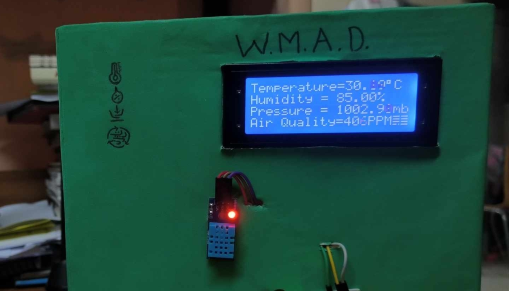
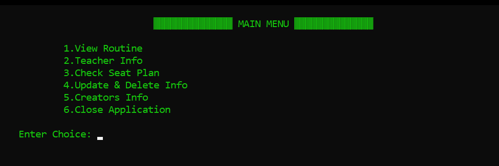

DIU Find & Fix is a web based system for Daffodil International University. It's a platform for students and staff to report lost and found items or campus issues.
WMAD is an Arduino-based weather station that uses sensors to measure temperature, humidity, pressure, and air quality. It displays data locally and sends it to the cloud.
The Exam Management System shows students their exam schedule and seats. It also tells teachers which rooms to monitor. The Exam Authority manages it.